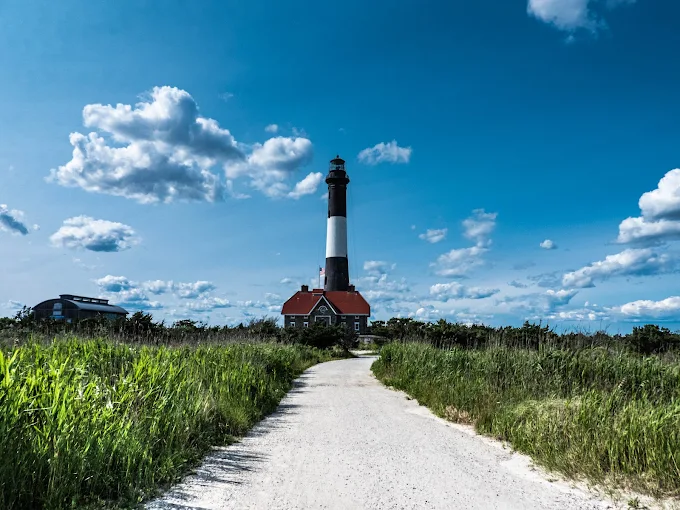
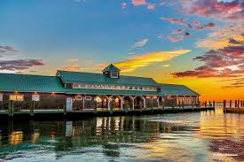
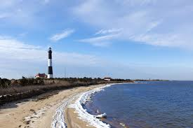
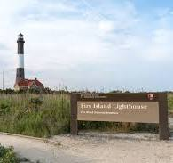

Fire Island felt like stepping into a quiet world that existed just outside of time. I remember how the ocean whispered, steady and patient, as if it had been waiting longer than I understood. There was a moment near sunset when everything turned gold, and even the shadows looked calm. No crowds, no rush—just the feeling that for a short while, nothing needed to be different than it was. My trip to Fire Island was a wonderful experience. It had beautiful beaches and scenic nature trails. The famous Fire Island Lighthouse was amazing. I saw beautiful birds and wild animals. I would love to go there once more.


